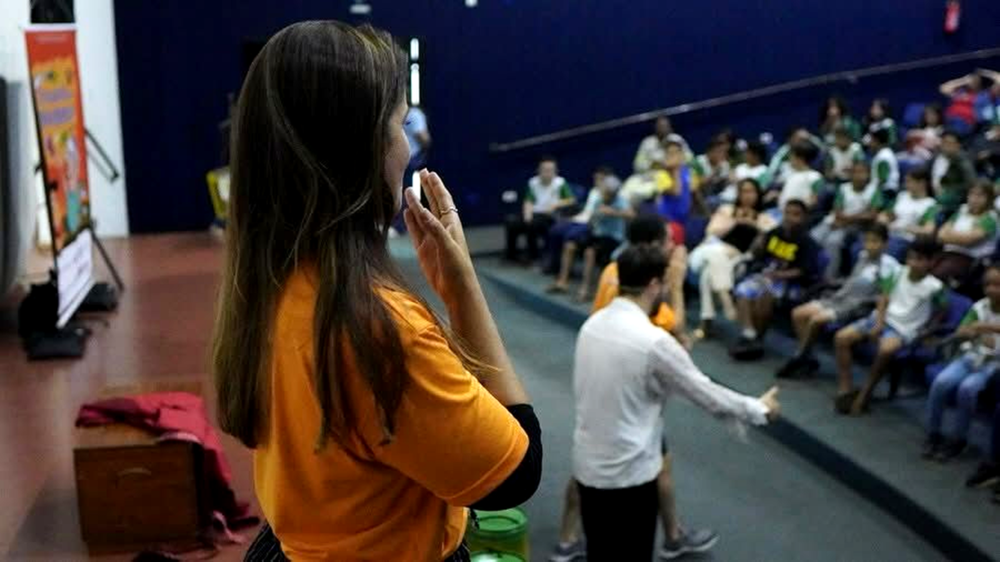
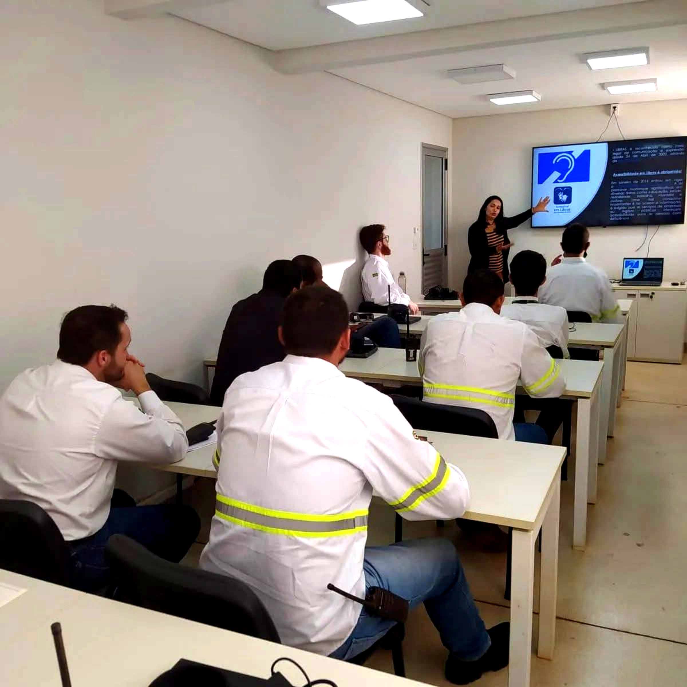
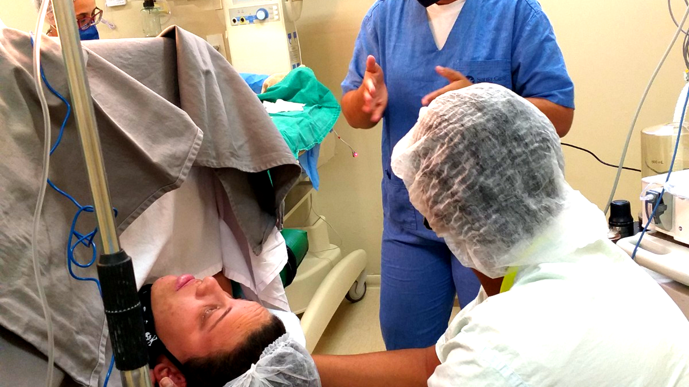
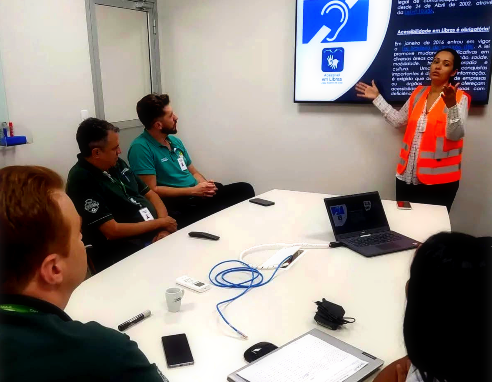
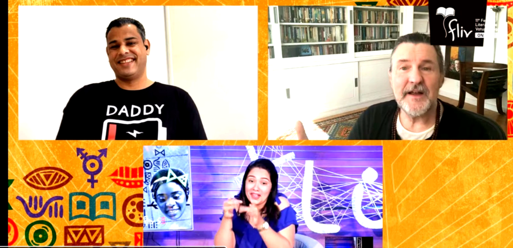
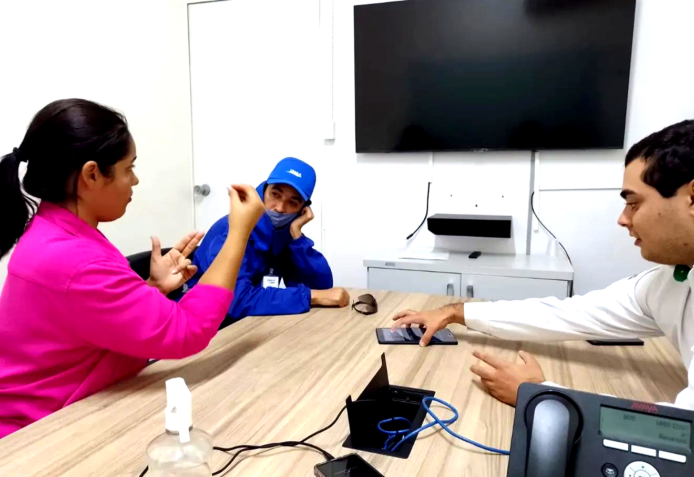
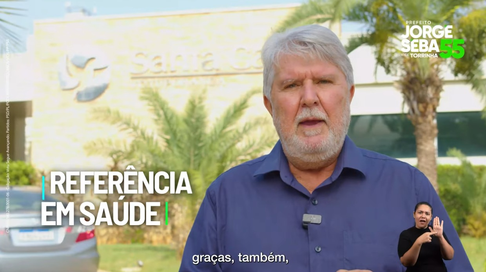
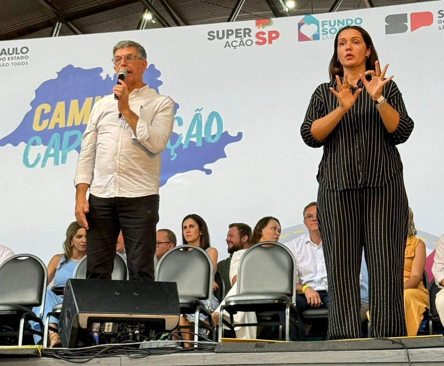
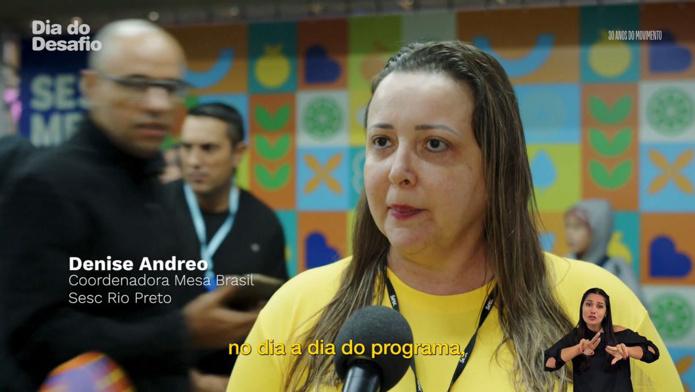

Intérprete Certificada
Tatiane Leão
Intérprete de Libras & Professora
Promovendo acessibilidade e inclusão real para a comunidade surda
Intérprete de Libras & Professora
Promovendo acessibilidade e inclusão real para a comunidade surda
Meu nome é Tatiane de Oliveira Leão Neves, sou Intérprete de Libras Profissional residente em Votuporanga, São Paulo. Com uma sólida formação e 27 anos de experiência, dedico minha carreira à promoção de acessibilidade genuína e inclusão da comunidade surda.
Sou proprietária da ALFA LEAO LIBRAS, empresa especializada em serviços de tradução, interpretação e consultoria em acessibilidade, fundada em 2020. Meu objetivo é quebrar as barreiras linguísticas e comunicacionais que impedem a plena participação das pessoas surdas na sociedade.
Me tornar referência nacional em acessibilidade em Libras, promovendo inclusão efetiva da comunidade surda em todos os setores da sociedade
Trabalho incansavelmente para garantir que a inclusão não seja apenas um conceito abstrato, mas uma realidade vivida no dia a dia. Cada interpretação, cada aula, cada consultoria é uma oportunidade de criar mudança e proporcionar dignidade e respeito àqueles que utilizam a Língua de Sinais.
Com 27 anos de experiência formalizada, atuo como Intérprete de Libras Profissional, oferecendo serviços de qualidade superior em diversos contextos.

ALFA LEAO LIBRAS
Fundada em 2020

Votuporanga, SP
Atuação regional e remota

Saúde, Eventos e Órgãos Públicos
Ambulatório Médico de Especialidades (AME)
Conheça alguns dos trabalhos e atuações que realizei na área de interpretação e ensino de Libras.

Conferências, convenções, apresentações e eventos públicos

Aulas práticas e cursos de capacitação em Linguagem de Sinais

Apoio em consultas, exames e atendimentos especializados

Capacitação de equipes para melhor acessibilidade inclusiva

Eventos, treinamentos, reuniões e congressos online

Análise e implementação de políticas de inclusão para organizações

Interpretação em campanhas políticas, eventos em geral e entrevistas

Interpretação em eventos e festas publicas municipais, regionais, estaduais e nacinoais

Interpretação em tempo real em vídeos para streeming
Assista aos conteúdos em vídeo sobre Libras, interpretação e acessibilidade. Conheça meu trabalho e aprenda mais sobre a inclusão.
Tatiane Leão atuou como intérprete no evento virtual.
Tatiane Leão atuou como intérprete na entrevista com Fabiana Karl, ampliando acesso e inclusão cultural.
Tatiane Leão atuou como intérprete na entrevista com Antonio Calloni, ampliando acesso e inclusão cultural.
Tatiane Leão atuou como intérprete na matéria sobre a rádio 96,5 - Unifev, ampliando acesso e inclusão cultural.
Tatiane Leão atuou como intérprete na transmissão do evento Dia do Desafio, ampliando acesso e inclusão cultural.
Tatiane Leão atuou como intérprete na transmissão da 26ª Sessão Ordinária e 4ª Sessão Solene, ampliando acesso e inclusão cultural.